Boyang Li (李博扬)
Ph.D Candidate
Research Gate |
Github |
Google Scholar
National University of Defense Technology (NUDT)
Email: liboyang20@nudt.edu.cn
Brief Bio
I received my Ph.D and Master degrees from NUDT and National Defense Technology Innovation Institute in 2024 and 2020, respectively.
Before that, I received my B.E. degree from Tianjin University in 2017.
Currently, I'm an assistant professor with the College of Electronic Science and Technology, NUDT.
My research interests focus on optical image processing, interpretation and application, particularly on
infrared small target detection, weakly supervised semantic segmentation,
and neural network compression and accelerating.
Publications --- 2024
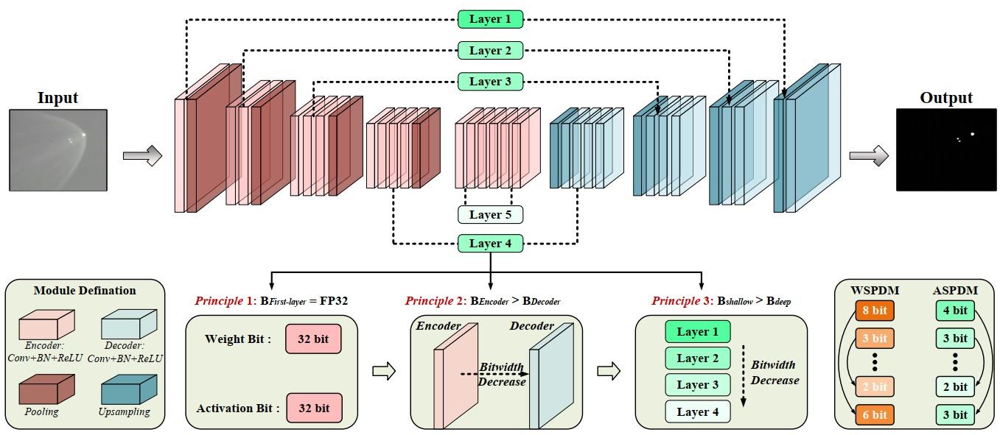
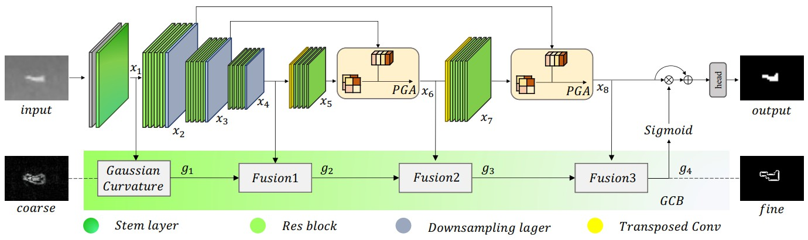
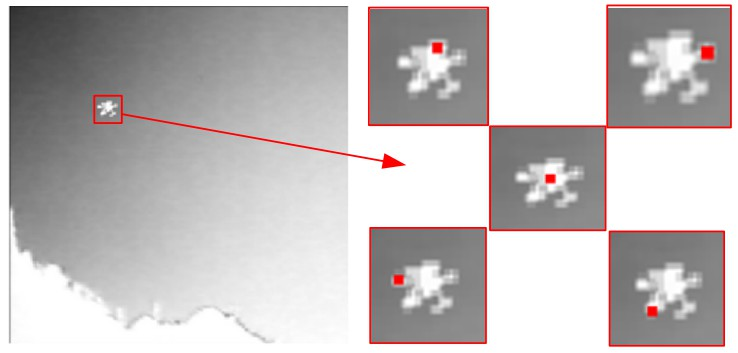
Publications --- 2023

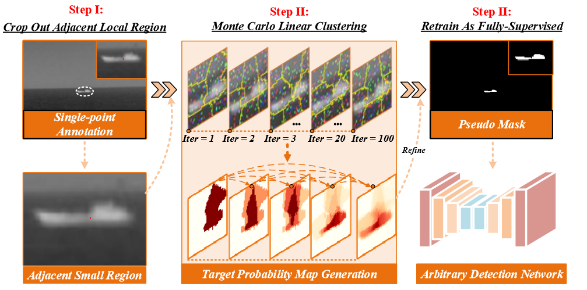
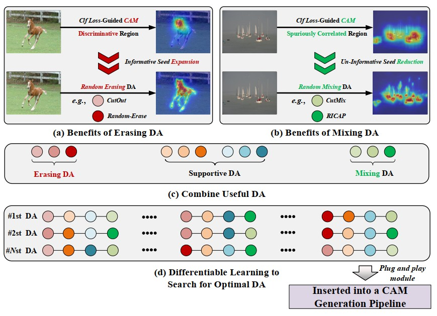
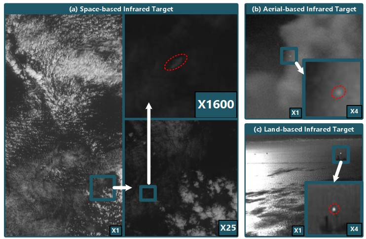
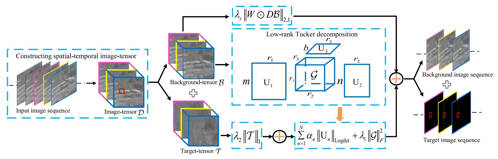
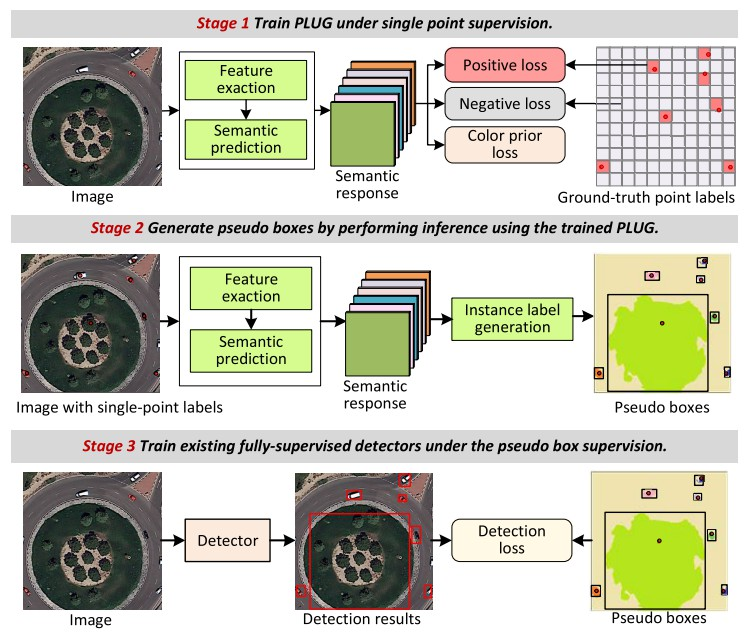
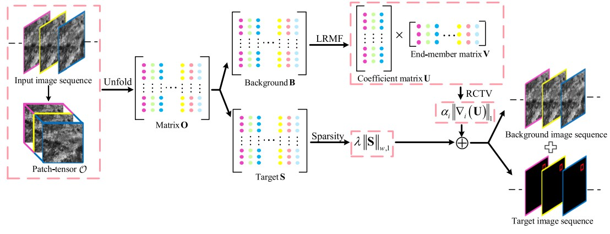
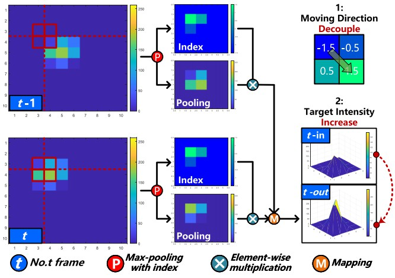
Publications --- 2022
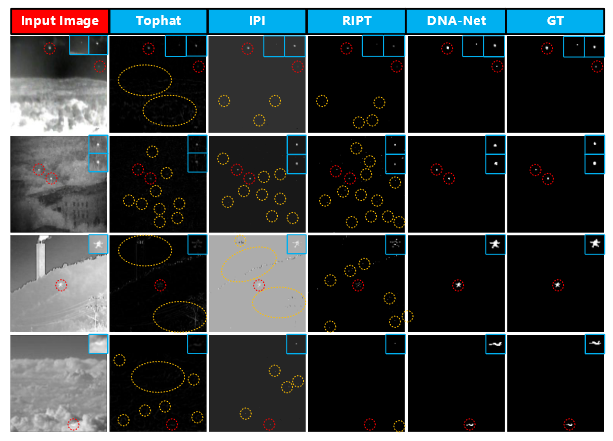
Publications --- 2021
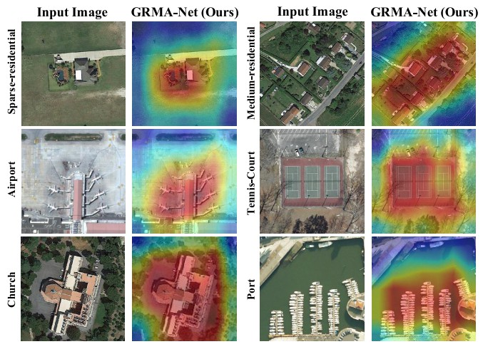
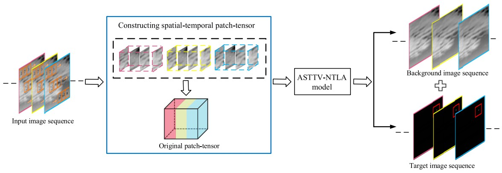
Academic Services
Reviewer:
IEEE Transactions on Image Processing
IEEE Transactions on Neural Network and Learning System
IEEE Transactions on Multimedia
IEEE Transactions on Geoscience and Remote Sensing
IEEE Geoscience and Remote Sensing Letters
IEEE Sensor Journal
IEEE Signal Processing Letter
IEEE Access
IEEE International Conference on Image Processing
Chinese Conference on Pattern Recognition and Computer Vision
Elsevier Infrared Physics and Technology
IET Computer Vision
IET Image Processing
......
IEEE Transactions on Image Processing
IEEE Transactions on Neural Network and Learning System
IEEE Transactions on Multimedia
IEEE Transactions on Geoscience and Remote Sensing
IEEE Geoscience and Remote Sensing Letters
IEEE Sensor Journal
IEEE Signal Processing Letter
IEEE Access
IEEE International Conference on Image Processing
Chinese Conference on Pattern Recognition and Computer Vision
Elsevier Infrared Physics and Technology
IET Computer Vision
IET Image Processing
......
Teaching Assistance
Lecture: Fundamentals of Signals and Systems (Spring Term, 2022)
Lecture: Fundamentals of Signals and Systems (Autumn Term, 2021)
Lecture: Fundamentals of Signals and Systems (Autumn Term, 2021)
Awards & Honors
2023 | Excellent Paper of China Society of Image and Graphics (DNANet TIP)
2023 | IEEE Signal Processing Society Top25 Paper (DNANet TIP)
2023 | Outstanding Scholarship of NUDT (13 over 1000+)
2023 | Excellent Student of NUDT
2022 | Second-class Scholarship of NUDT
2021 | Excellent Student of NUDT
2018 | Excellent Student of Military Academy of Sciences
2017 | Excellent Graduates of Tianjin University
2014 | China Aerospace Science and Technology Corporation Scholarship
2023 | IEEE Signal Processing Society Top25 Paper (DNANet TIP)
2023 | Outstanding Scholarship of NUDT (13 over 1000+)
2023 | Excellent Student of NUDT
2022 | Second-class Scholarship of NUDT
2021 | Excellent Student of NUDT
2018 | Excellent Student of Military Academy of Sciences
2017 | Excellent Graduates of Tianjin University
2014 | China Aerospace Science and Technology Corporation Scholarship